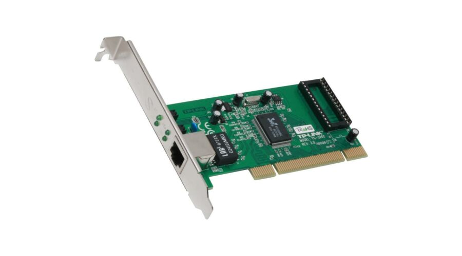
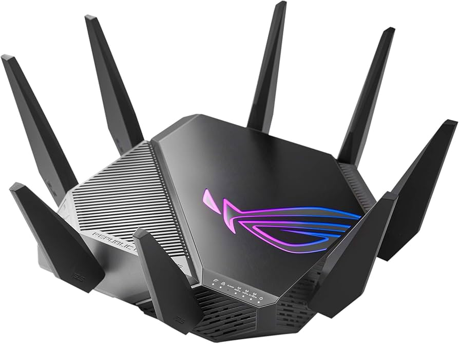
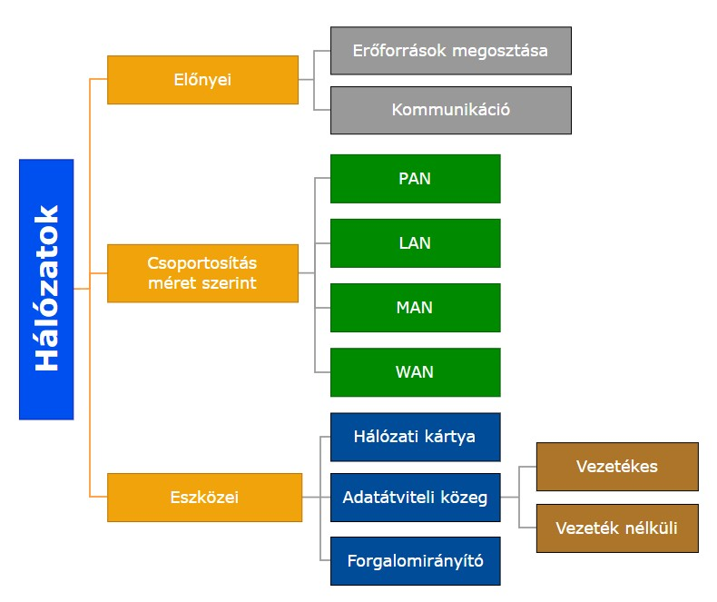

Modern Számítástechnika
Üdvözlünk a Modern Számítástechnika weboldalán!
Itt megismerheted az informatika legfontosabb területeit: hardverek, szoftverek, hálózatok.
Hálózatok
A számítógépeket ma már ritkán használjuk egymagukban, általában kapcsolatban állnak más számítógépekkel, kommunikációs eszközökkel, az internet világméretű hálózatával. Egy vagy több összekapcsolt számítógép hálózatot alkot, melynek segítségével egymás között kommunikálhatnak, adatokat cserélhetnek, erőforrásaikat megoszthatják.
A hálózatok előnyei:
Az erőforrások megosztása azt jelenti, hogy a hálózatba kapcsolt számítógépek a hardvereszközeiket közösen használhatják, például egy nyomtatót. Az iskolai hálózaton adatfájlokat nem kell mindegyik számítógépen tárolni, a programokat nem kell mindegyik számítógépre feltelepíteni, elég csak az egyikre, amely kiszolgálja a többi számítógépet.
A hálózatnak köszönhetően a kommunikáció gyorsabb és költségtakarékosabb, könnyen és gyorsan elérhetők nyilvános adatbázisok, friss információk.
A számítógépek szerepe a hálózatban általában nem egyenrangú. Azt a számítógépet, amelyik a többi számára biztosít szolgáltatásokat, adatokat, erőforrásokat, kiszolgáló (szerver) számítógépnek nevezzük. Azok a számítógépek, amelyek ezeket a szolgáltatásokat igénybe veszik az ügyfelek, más néven kliensek.
- LAN: A LAN (Local Area Network) helyi hálózat, néhány száz méteren belül elhelyezkedő, hálózatban összekapcsolt szerverek, személyi számítógépek és más informatikai eszközök összességét jelenti.
- MAN: A MAN (Metropolitan Area Network) helyi hálózatokat összekötő, nagyobb kiterjedésű városi hálózat. 1 és 50 km is lehet az egyes számítógépek vagy helyi hálózatok közötti távolság. Egy ilyen hálózat akár több tízezer számítógépet is összekapcsolhat.
- WAN: A WAN (Wide Area Nerwork) nagy kiterjedésű, egy régióra, egy országra kiterjedő hálózatot jelent. Az internet is ebbe a kategóriába tartozik.
A hálózatkiépítés eszközei

- Hálózati kártya: A hálózati kártya a számítógép hálózatra való csatlakozását lehetővé tevő beépített egység. Újabban a számítógépek alaplapjára integrálják, kaphatók kártyás kivitelben is, melyek lehetnek vezetékesek és vezeték nélküliek egyaránt.
- Átviteli közeg: Az átviteli közeg olyan eszköz, anyag, amelyen keresztül az információ (jel) továbbítása történik a hálózati eszközök között. Lehet vezetékes, például UTP-kábel, optikai kábel vagy vezeték nélküli, például rádióhullám, mikrohullám, infravörös sugár.

- Hálózati eszközök: A hálózati eszközök a vezetéken átmenő jeleket felerősítik, átalakítják, illetve megoszthatják. Az adatforgalmat irányító intelligens eszköz a router, amely kiolvassa az üzenetből a célszámítógép címét, és ennek továbbítja az üzenetet. Lehet vezetékes és vezeték nélküli. Magyar elnevezése forgalomirányító, amely megosztja az internetkapcsolatot az eszközeink, készülékeink között.
- Hálózati szoftverek: A számítógépeket nem elég csak fizikailag összekötni, a hálózat működéséhez szükség van programokra is. A hálózati operációs rendszer a szerveren fut és kezeli az alkalmazásokat, a jogosultságokat. A hálózati operációs rendszer teszi lehetővé a fájlok megosztását vagy egy nyomtató elérését több számítógép számára.
Fontos még az adatátviteli sebesség
Az „internetezés” sebessége az adatátviteli sebességtől függ. Az adatátviteli sebesség az időegység alatt átvitt adat mennyiségét jeleni, melynek mértékegysége a bit/másodperc (bps). Egy weboldal megnyitási sebessége, egy zene vagy film letöltése, a letöltési sebességtől függ. A szolgáltatók az előfizetett csomag leírásában, amire előfizetünk, „per” jellel (/) választják el egymástól a letöltési és a feltöltési sebességet. Mindkét sebesség esetében egy maximális és egy garantált értéket is megadnak.
Összefoglalva
